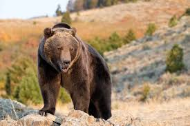
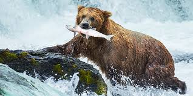
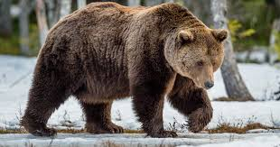
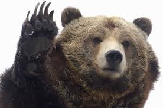
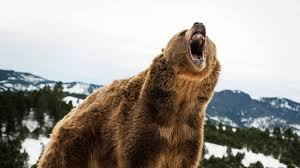
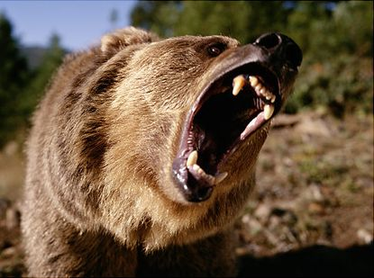

Grizzly Bear
North American brown bear

Brown bears originated in Eurasia and traveled to North America approximately 50,000 years ago, spreading into the contiguous United States about 13,000 years ago.
- Wikipedia

Although grizzlies are of the order Carnivora and have the digestive system of carnivores, they are normally omnivores: their diets consist of both plants and animals.
- Wikipedia

Grizzlies hibernate for 5–7 months each year except where the climate is warm...
- Wikipedia

The average lifespan for a male is estimated at 22 years, with that of a female being slightly longer at 26. Females live longer than males due to their less dangerous life...
- Wikipedia

The relationship between grizzly bears and other predators is mostly one-sided; grizzly bears will approach feeding predators to steal their kill. In general, the other species will leave the carcasses for the bear to avoid competition or predation.
- Wikipedia

Grizzlies are considered more aggressive compared to black bears when defending themselves and their offspring. Unlike the smaller black bears, adult grizzlies do not climb trees well, and respond to danger by standing their ground and warding off their attackers. Mothers defending cubs are the most prone to attacking, and are responsible for 70% of humans killed by grizzlies.
- Wikipedia